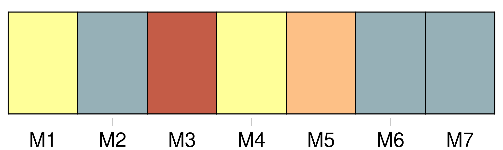
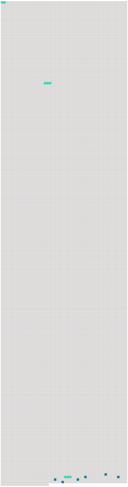

Longueur nb maillons : 9 mentions |
 |
[Les Krafft] étaient originaires d’ Anvers. [58 phrases] Le plus curieux, c’ est que chez lui, malgré son souci constant de l’ attitude en scène, comme chez Jean-Michel, malgré son respect craintif des conventions sociales, il y avait toujours quelque chose de saccadé, d’ inattendu, d’ hurluberlu, qui faisait dire aux gens que [tous les Krafft] étaient un peu timbrés. [378 phrases] Il tenait de son père et de son grand-père [leur] robuste constitution. On n’ était pas douillet dans la famille : malade ou non, on ne se plaignait jamais, et rien n’ était capable de changer quelque chose aux habitudes [des deux Krafft] , père et fils. [Ils] sortaient, quelque temps qu’ il fît, été comme hiver, [restaient] pendant des heures sous la pluie ou le soleil, quelquefois tête nue et les vêtements ouverts, par négligence ou par bravade, [faisaient] des lieues sans jamais être las, et [regardaient] avec une pitié méprisante la pauvre Louisa, qui ne disait rien, mais qui était forcée de s’ arrêter, toute blanche, les jambes gonflées, et le cœur battant à se briser. Christophe n’ était pas loin de partager [leur] dédain pour sa mère : il ne comprenait pas qu’ on fût malade ; quand il tombait, ou se frappait, ou se coupait, ou se brûlait, il ne pleurait pas ; mais il était irrité contre l’ objet ennemi. |
 |
Il est possible de télécharger la ressource sur la page Ortolang |
Si vous avez des questions ou vous voyez des erreurs, merci d'envoyer un mail à silvia.federzoni89@gmail.com |